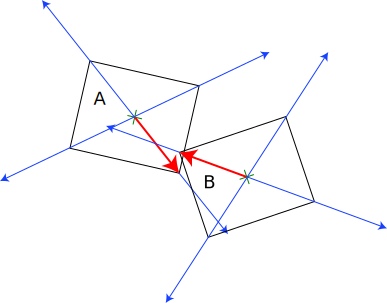

Lesson 30 - Collision Detection
For this lesson, get a cup of coffee or tea, because it's a long one. Collision detection is a complex subject and even though the treatment in this lesson is simplistic, it's still pretty involved. If one really wants to build a JavaScript app that handles physics, including collisions, you are best off to get one of the JS libraries intended for that purpose, such cannon.js or PhysicsJS. What we'll cover here is simply the basic concepts using the tools in three.js.
There are two basic approaches to collision detection:
- Bounding box checks
- Ray-casting
Each has advantages and disadvantages.In this lesson, we will actually use both.
The basics of the lesson are that we have a large, partially transparent cube and we want to have a number of objects (cubes, balls, cylinders) bouncing around inside, bouncing off the walls and each other. First, let's consider the collisions with the walls, as it is simpler.
There are a couple of ways that we could perform this. One of these is to calculate what is called the "axis-aligned bounding box" (AABB) for each object for each frame and then see if the box overlaps any of the walls. The following diagram shows how the AABB is generated for various (2D) shapes:
You can see that the boxes are aligned (parallel) to the X and Y axes. Of course, in our case, we also have to handle the Z axis. The following code would create such a AABB box using the three.js BoxHelper object. Now, this code works, but as you can see it is relatively complex and would have to be updated for each object for each frame (since the objects are not only moving but rotating too).
/**
* Create a set of vertices that represent the AABB box from BoxHelper
*
* 5____4
* 1/___0/|
* | 6__|_7
* 2/___3/
*
* 0: max.x, max.y, max.z
* 1: min.x, max.y, max.z
* 2: min.x, min.y, max.z
* 3: max.x, min.y, max.z
* 4: max.x, max.y, min.z
* 5: min.x, max.y, min.z
* 6: min.x, min.y, min.z
* 7: max.x, min.y, min.z
*/
function createAABBVertices ( mesh ) {
var vertices = [];
var helper = new THREE.BoundingBoxHelper(mesh, 0xff0000);
helper.update();
var max = helper.box.max;
var min = helper.box.min;
vertices.push(new THREE.Vector3(max.x, max.y, max.z));
vertices.push(new THREE.Vector3(min.x, max.y, max.z));
vertices.push(new THREE.Vector3(min.x, min.y, max.z));
vertices.push(new THREE.Vector3(max.x, min.y, max.z));
vertices.push(new THREE.Vector3(max.x, max.y, min.z));
vertices.push(new THREE.Vector3(min.x, max.y, min.z));
vertices.push(new THREE.Vector3(min.x, min.y, min.z));
vertices.push(new THREE.Vector3(max.x, min.y, min.z));
return vertices;
}Consequently, I took a simpler path and simply computed the radius of a globe with encloses the object.
var helper = new THREE.BoxHelper(cylinder, 0xff0000);
cylinder.limit = WALL_LIMIT - helper.geometry.boundingSphere.radius;This is much simpler and doesn't have to be updated at each frame since the globe is axis-agnostic. Then at each frame for each object, we simply check if the object is within that radial distance of a wall. If it is then we simply invert the velocity for that axis, effectively "bouncing" it off the wall. This is admittedly a little crude but it is very efficient and the only real downside is that we sometimes bounce the object off the wall before it actually touches.
function checkWallCollision ( mesh ) {
if ( mesh.position.x > mesh.limit ) {
mesh.velocity.x = -Math.abs(mesh.velocity.x);
} else if (mesh.position.x < -mesh.limit ) {
mesh.velocity.x = Math.abs(mesh.velocity.x);
}
if ( mesh.position.y > mesh.limit ) {
mesh.velocity.y = -Math.abs(mesh.velocity.y);
} else if (mesh.position.y < -mesh.limit ) {
mesh.velocity.y = Math.abs(mesh.velocity.y);
}
if ( mesh.position.z > mesh.limit ) {
mesh.velocity.z = -Math.abs(mesh.velocity.z);
} else if (mesh.position.z < -mesh.limit ) {
mesh.velocity.z = Math.abs(mesh.velocity.z);
}
}For object to object collisions, we could employ a similar approach, but it gets a little more complex, so instead we instead use the RayCaster support provided by three.js. The way this works is that there is an object called THREE.RayCaster. The RayCaster can be thought of as shooting a ray out and it checks if that ray intercepts one or more THREE.Mesh objects.
Since we know the position and velocity in X,Y and Z, we initialize the raycaster as centered on the object and the ray's direction is that from the center of the object through each vertex of the mesh. We have the collection of all objects bouncing around and those are the targets for the RayCaster. The RayCaster object then conceptually projects the ray out along the path from center through each vertex and returns a collection of the objects which are intercepted. We don't actually have to do this for each vertex though, only those that are within HALF_PI of the angle between the vertex and the direction the object is travelling. No need to check for collisions with objects behind us.
This diagram demonstrates this, where the blue arrows are the rays from the RayCaster and the red arrow is the distance from the center to the vertex. If the RayCaster returns an object whose distance is less than the length of the red arrow, then we have a collision.

So how do we calulate the result of the collision? Basically, we apply some "simple" physics. We assume that is an inelastic collision, meaning the objects bounce off each other without absorbing any of the energy (which wouldn't happen in the real world, of course, but this is just a demo, after all). We won't go into all the details - there are many good tutorials about the physics, such as this one.
So putting it all together we have:
function checkObjectCollisions ( mesh ) {
for ( var vertexIndex = 0; vertexIndex < mesh.geometry.vertices.length; vertexIndex++ ) {
var localVertex = mesh.geometry.vertices[vertexIndex].clone();
var globalVertex = localVertex.applyMatrix4( mesh.matrix );
var directionVector = globalVertex.sub( mesh.position );
var angle = mesh.velocity.angleTo( directionVector);
if ( angle <= Math.PI/2) {
raycaster.set( mesh.position, directionVector.clone().normalize() );
var collisionResults = raycaster.intersectObjects( objects.children );
if ( collisionResults.length > 0 && collisionResults[0].distance < directionVector.length() ) {
handleObjectsCollision( mesh, collisionResults[0] );
break;
}
}
}
}
function handleObjectsCollision( meshA, collisionResult ) {
var meshB = collisionResult.object;
var collision = new THREE.Vector3();
collision.x = ((meshA.position.x * OBJ_SIZE) + (meshB.position.x * OBJ_SIZE)) / (OBJ_SIZE + OBJ_SIZE);
collision.y = ((meshA.position.y * OBJ_SIZE) + (meshB.position.y * OBJ_SIZE)) / (OBJ_SIZE + OBJ_SIZE);
collision.z = ((meshA.position.z * OBJ_SIZE) + (meshB.position.z * OBJ_SIZE)) / (OBJ_SIZE + OBJ_SIZE);
var masses = meshA.mass + meshB.mass;
var avX = (meshA.velocity.x * (meshA.mass - meshB.mass) + (2 * meshB.mass * meshB.velocity.x)) / masses;
var avY = (meshA.velocity.y * (meshA.mass - meshB.mass) + (2 * meshB.mass * meshB.velocity.y)) / masses;
var avZ = (meshA.velocity.z * (meshA.mass - meshB.mass) + (2 * meshB.mass * meshB.velocity.z)) / masses;
var bvX = (meshB.velocity.x * (meshB.mass - meshA.mass) + (2 * meshA.mass * meshA.velocity.x)) / masses;
var bvY = (meshB.velocity.y * (meshB.mass - meshA.mass) + (2 * meshA.mass * meshA.velocity.y)) / masses
var bvZ = (meshB.velocity.z * (meshB.mass - meshA.mass) + (2 * meshA.mass * meshA.velocity.z)) / masses;
meshA.velocity.set(avX, avY, avZ);
meshB.velocity.set(bvX, bvY, bvZ);
}
And that's it! Click on this link to see the actual rendered demo in all it's colliding glory!